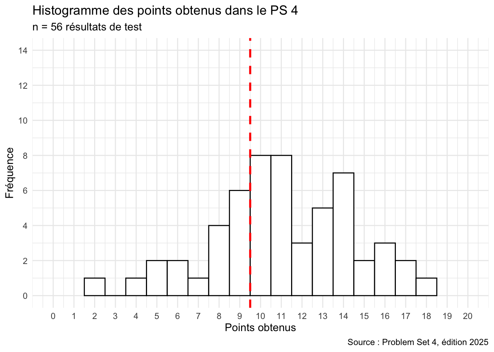
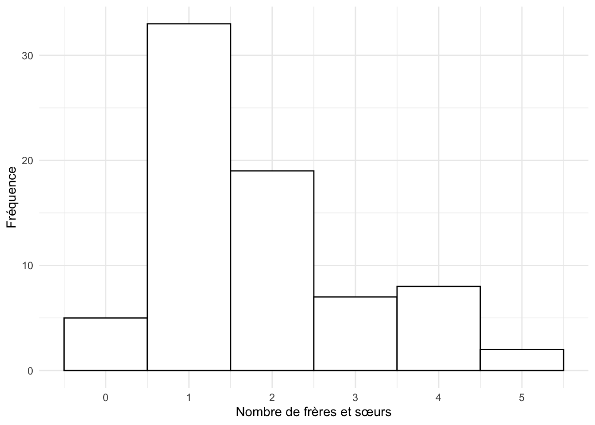

Dans le cours, le Problem Set 4 était un test sur Moodle portant sur les chapitres 10 à 12. Les questions ci-dessous en reprennent le contenu, avec la correction et une explication pour chaque réponse.
NoteRésultats de l’édition 2025 du cours
56 étudiant·es ont passé ce test (20 points au maximum, 10 pour réussir). La moyenne était de 11,0 points et 70 % des étudiant·es l’ont réussi.
── Attaching core tidyverse packages ──────────────────────── tidyverse 2.0.0 ──
✔ dplyr 1.2.1 ✔ readr 2.2.0
✔ forcats 1.0.1 ✔ stringr 1.6.0
✔ ggplot2 4.0.3 ✔ tibble 3.3.1
✔ lubridate 1.9.5 ✔ tidyr 1.3.2
✔ purrr 1.2.2
── Conflicts ────────────────────────────────────────── tidyverse_conflicts() ──
✖ dplyr::filter() masks stats::filter()
✖ dplyr::lag() masks stats::lag()
ℹ Use the conflicted package (<http://conflicted.r-lib.org/>) to force all conflicts to become errors

Exercices de révision
Ces questions reprennent le Problem Set 4. Choisissez Vrai ou Faux, cochez une réponse ou tapez un nombre : la couleur indique tout de suite si votre réponse est correcte. Cliquez sur Explication pour voir la correction.
Question 13.1
Quels types de visualisation sont bien adaptés pour afficher la relation entre deux variables numériques ?
Histogramme
Diagramme à barres
Boîte à moustaches
Nuage de points
Le nuage de points place une variable numérique sur chaque axe. L’histogramme montre la distribution d’une variable numérique ; le diagramme à barres compte des catégories ; la boîte à moustaches compare une variable numérique entre catégories.
Question 13.2
Jugez chaque affirmation concernant les statistiques descriptives :
L’objectif des statistiques descriptives est principalement d’analyser les relations causales entre les variables.
La partie descriptive d’une analyse statistique fournit généralement des indications telles que la taille de l’échantillon (n), les fréquences des variables catégorielles et les moyennes des variables numériques.
Les tests d’hypothèse, par exemple avec un test t, sont une étape courante des statistiques descriptives.
Les statistiques descriptives précèdent souvent les statistiques inférentielles dans une analyse de données quantitatives en sciences sociales.
Certaines visualisations de données, comme les histogrammes, se prêtent bien à la présentation de statistiques descriptives.
Les statistiques descriptives résument les données de l’échantillon (effectifs, fréquences, moyennes, dispersion, graphiques). Les tests d’hypothèse et l’analyse de relations causales relèvent des statistiques inférentielles, qui viennent généralement ensuite.
Question 13.3
Jugez chaque proposition concernant l’histogramme suivant (source des données : questionnaire du cours) :

L’histogramme montre que le nombre de frères et sœurs (variable fraterie) suit une loi normale.
L’histogramme montre que la plupart des étudiant·es de la classe ont grandi dans des constellations familiales traditionnelles.
L’histogramme montre qu’il y a plus d’étudiant·es qui ont 3 frères et sœurs que d’étudiant·es qui sont enfants uniques.
La constellation la plus fréquente est celle des étudiant·es ayant un seul frère ou une seule sœur.
Une personne ayant participé au questionnaire a indiqué qu’elle avait 7 frères et sœurs.
a) Le nombre de frères et sœurs est une variable de comptage asymétrique, pas une loi normale.
b) Un histogramme du nombre de frères et sœurs ne dit rien sur la forme des familles.
c) 7 étudiant·es ont 3 frères et sœurs, contre 5 enfants uniques.
d) La barre la plus haute est celle d’un frère ou d’une sœur (33 étudiant·es).
e) Personne n’indique 7 frères et sœurs : le maximum est de 5. Vérifiez avec table(reponses_socio$fraterie).
Question 13.4
Dans le jeu de données reponses_socio.csv, combien de minutes les étudiant·es possédant un passeport suisse mettent-ils en moyenne pour se rendre à l’université ? Arrondissez à la minute.
Pour suisse == "Oui", la moyenne vaut 33,52 minutes, soit 34 une fois arrondie.
Question 13.5
Dans le jeu de données reponses_socio.csv, quel genre a le trajet moyen le plus court pour se rendre à l’université ? (Tapez le genre exactement comme il figure dans les données.)
arrange() trie par ordre croissant : la première ligne, Homme (20,6 minutes), a le trajet moyen le plus court.
Question 13.6
Le code suivant fournit des statistiques descriptives du jeu de données mtcars :
data(mtcars)summary(mtcars)
summary() affiche pour chaque variable numérique le minimum, les quartiles, la médiane, la moyenne et le maximum.
Question 13.7
Dans le jeu de données reponses_socio.csv, en moyenne, les étudiant·es sans passeport suisse ont besoin de moins de temps pour se rendre à l’université que leurs camarades suisses.
Les étudiant·es sans passeport suisse mettent en moyenne 21,5 minutes, contre 33,5 pour les Suisses·ses. Attention : le groupe sans passeport suisse ne compte que 10 personnes. Pour savoir si une telle différence est due au hasard, il faudrait un test (session 11).
Question 13.8
Les statistiques descriptives révèlent souvent des informations et des tendances intéressantes dans les données, même avant l’application de statistiques inférentielles.
Effectifs, moyennes et graphiques montrent souvent déjà les principales tendances ; les statistiques inférentielles testent ensuite si elles se généralisent à la population.
Question 13.9
Vous avez effectué un test t à un échantillon et obtenu une statistique t de 4.0869 avec 49 degrés de liberté et une valeur p de 0.0001618. Quelle conclusion pouvez-vous en tirer au niveau de signification de 5 % ?
La valeur p (0.00016) est bien inférieure au seuil de 0.05 : on rejette H0. La moyenne de l’échantillon diffère significativement de la valeur testée.
Question 13.10
Lesquelles des hypothèses suivantes pourraient être testées dans un test t à deux échantillons ?
Les deux échantillons proviennent de populations avec la même moyenne.
Les deux échantillons proviennent de populations avec des moyennes différentes.
L’une des populations est beaucoup plus nombreuse que l’autre.
Les populations ont la même moyenne mais des variances très différentes.
Trois groupes d’humains sont de tailles moyennes très différentes.
Le test t à deux échantillons compare deux moyennes : H0 « les moyennes sont égales » (a) contre H1 « elles diffèrent » (b). Il ne teste ni la taille des populations ni les variances. Pour comparer trois groupes, on utilise une ANOVA.
Question 13.11
Jugez chaque proposition relative aux statistiques inférentielles :
Les statistiques inférentielles permettent de tirer des conclusions sur une population entière en se basant sur l’analyse d’un échantillon représentatif de cette population.
Si deux variables quantitatives, par exemple y et x, sont significativement corrélées, il existe toujours une relation de cause à effet entre ces deux variables.
L’échantillonnage aléatoire est une méthode de sélection au hasard d’un sous-groupe de participants dans une population, où chaque membre a une chance égale d’être choisi, offrant ainsi une représentation fiable de la population entière.
Un échantillon de 100 femmes suisses d’une taille moyenne de 180 cm est représentatif de la distribution de taille des femmes en Suisse.
Les tests t, l’ANOVA et la régression linéaire peuvent être des techniques utiles dans une analyse de statistiques inférentielles.
b) Corrélation n’est pas causalité : une troisième variable ou le hasard peuvent expliquer une corrélation.
d) La taille moyenne des femmes en Suisse est d’environ 165 cm : un échantillon dont la moyenne est de 180 cm n’est manifestement pas représentatif.
Question 13.12
Supposons que nous fassions un test t pour savoir si la taille moyenne de 100 joueuses de la WNBA sélectionnées au hasard diffère de celle de 100 hommes néerlandais sélectionnés au hasard. Le code suivant simule les deux échantillons et effectue le test. Exécutez-le et jugez chaque affirmation.
set.seed(2026)wnba <-rnorm(100, mean =184.5, sd =6.5)pays_bas <-rnorm(100, mean =183.8, sd =7.1)t.test(wnba, pays_bas)
Dans l’échantillon simulé, la joueuse de basket-ball moyenne mesure 183,86 cm.
La valeur p du test indique que la différence entre les tailles moyennes est statistiquement significative au niveau de 5 %.
L’hypothèse nulle du test t est que les moyennes des deux populations (joueuses de la WNBA et hommes néerlandais) sont égales.
Le test t indique que les hommes néerlandais sont significativement plus grands que les joueuses de basket-ball de la WNBA.
Les résultats du test t indiquent que, dans les échantillons simulés, il n’y a pas de différence significative entre les tailles moyennes des joueuses de basket et des hommes néerlandais.
a) Sous sample estimates, mean of x (les joueuses) vaut 183,86 cm ; mean of y (les hommes néerlandais) vaut 184,66 cm.
b), d) et e) La valeur p (0,40) est supérieure à 0,05 : on ne rejette pas H0. Dans l’échantillon, les hommes néerlandais sont un peu plus grands, mais cet écart de 0,8 cm n’est pas significatif ; l’intervalle de confiance à 95 % (de −2,66 à 1,06 cm) contient 0.
c) Les hypothèses portent sur les populations : H0 postule que les deux moyennes sont égales (μ₁ = μ₂), H1 qu’elles diffèrent.
Question 13.13
Que signifie une valeur p inférieure à 0,05 dans le contexte d’un test statistique ?
La valeur p est la probabilité d’observer des résultats au moins aussi extrêmes que ceux de l’échantillon si l’hypothèse nulle était vraie. Elle se calcule en supposant H0 vraie : ce n’est donc ni la probabilité que H0 soit vraie (a, c), ni la probabilité que les résultats soient « dus au hasard » (b). Cette dernière lecture est très répandue, mais elle inverse la condition : elle décrit P(H0 | données) au lieu de P(données | H0). La valeur p ne dit rien non plus sur la normalité des données (d).
Question 13.14
Avec des échantillons de grande taille, même des différences (apparemment) faibles entre les moyennes de deux groupes peuvent devenir statistiquement significatives (par exemple, la taille moyenne des hommes dans deux pays différents).
L’erreur standard diminue quand la taille de l’échantillon augmente : avec de très grands échantillons, même une petite différence donne une valeur p très faible. « Significatif » ne veut donc pas dire « important ».
Question 13.15
Jugez chaque proposition concernant le graphique suivant :
La ligne noire épaisse au milieu des boxplots indique la longueur moyenne des nageoires pour chaque espèce de manchots.
Au moins un manchot Adélie de l’échantillon a une nageoire plus longue qu’au moins un manchot papou (Gentoo).
Les boxplots nous indiquent qu’il existe des différences statistiquement significatives dans la longueur des nageoires entre les trois espèces de manchots.
Sur la seule base des boxplots, nous ne pouvons pas savoir si les différences de longueur des nageoires des différentes espèces de manchots sont statistiquement significatives (nous pourrions faire une ANOVA pour le savoir).
Les boxplots indiquent qu’il y a deux valeurs extrêmes (outliers) dans l’ensemble de données.
a) La ligne du milieu est la médiane, pas la moyenne.
b) La nageoire la plus longue chez les manchots Adélie (210 mm) dépasse la plus courte chez les manchots papous (203 mm).
c) et d) Un graphique ne teste rien : il faut un test (ici une ANOVA) pour conclure à une différence significative.
e) Les deux points isolés appartiennent aux Adélie (172 mm et 210 mm).
Question 13.16
Exécutez le code suivant et jugez chaque proposition :
En raison des lois de la physique, on peut raisonnablement supposer que les voitures plus lourdes consomment généralement plus de carburant par kilomètre que les voitures plus légères. En d’autres termes, nous pouvons supposer qu’il existe une relation de cause à effet entre le poids du véhicule et l’efficacité énergétique.
Une corrélation seule ne prouve pas la causalité, mais ici un mécanisme connu (il faut plus d’énergie pour déplacer une masse plus grande) justifie l’hypothèse d’un effet causal du poids sur la consommation.
Question 13.20
Le R carré d’un modèle de régression linéaire indique le pourcentage de la variabilité de la variable dépendante (y) qui peut être expliquée par la variabilité des variables indépendantes (x1, x2, etc.).
Un R² de 0,75 signifie que le modèle explique 75 % de la variance de y. On le lit dans summary(modele) (Multiple R-squared).